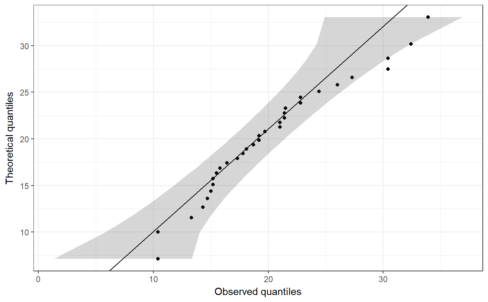

This function creates a qq-plot with a confidence interval.
ggqq(x, distribution = "norm", ..., ci = TRUE, line.estimate = NULL, conf.level = 0.95, sampleSizeOverride = NULL, observedOnX = TRUE, scaleExpected = TRUE, theoryLab = "Theoretical quantiles", observeLab = "Observed quantiles", theme = theme_bw())
| x | A vector containing the values to plot. |
|---|---|
| distribution | The distribution to (a 'd' and 'q' are prepended, and the resulting functions are used, e.g. |
| … | Any additional arguments are passed to the quantile function (e.g. |
| ci | Whether to show the confidence interval. |
| line.estimate | Whether to show the line showing the match with the specified distribution (e.g. the normal distribution). |
| conf.level | THe confidence of the confidence leven arround the estimate for the specified distribtion. |
| sampleSizeOverride | It can be desirable to get the confidence intervals for a different sample size (when the sample size is very large, for example, such as when this plot is generated by the function |
| observedOnX | Whether to plot the observed values (if |
| scaleExpected | Whether the scale the expected values to match the scale of the variable. This option is provided to be able to mimic SPSS' Q-Q plots. |
| theoryLab | The label for the theoretically expected values (on the Y axis by default). |
| observeLab | The label for the observed values (on the Y axis by default). |
| theme | The theme to use. |
This is strongly based on the answer by user Floo0 to a Stack Overflow question at Stack Exchange (see http://stackoverflow.com/questions/4357031/qqnorm-and-qqline-in-ggplot2/27191036#27191036), also posted at GitHub (see https://gist.github.com/rentrop/d39a8406ad8af2a1066c). That code is in turn based on the qqPlot function from the car package.
A ggplot plot is returned.
ggqq(mtcars$mpg);